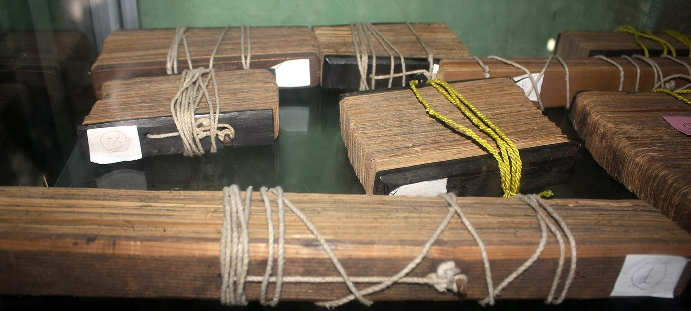
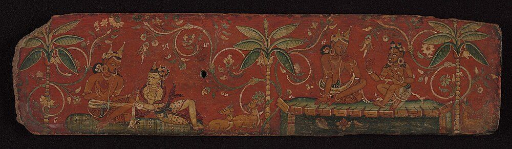
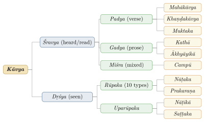
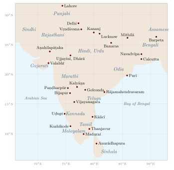

Chapter 1: Introduction: Kāvya and the Literatures of India¶
kāvyaṃ yaśase ’rthakṛte vyavahāravide śivetarakṣataye |
sadyaḥ paranirvṛtaye kāntāsammitatayopadeśayuje ||
Poetry is for fame, for profit, for knowledge of the ways of the world, for warding off misfortune, for immediate and supreme delight, and for instruction offered in the manner of a beloved.
— Mammaṭa, Kāvyaprakāśa 1.2
1.1 A Multilingual Literary Inheritance¶
The literatures of the Indian subcontinent form one of the longest-documented literary histories in the world. Their earliest layer, the hymns of the Ṛgveda, is usually dated to c. 1500–1200 BCE; their latest layer is being written today in more than twenty major languages. Between these lie the Sanskrit epics and court poetry, the Tamil anthologies of love and war, the Pali and Prakrit literatures of Buddhist and Jain communities, the devotional songs of the bhakti and Sufi poets, the Persian and Urdu literature of the Indo-Islamic courts, and the novels, short stories and free verse of the modern period.
The title of this volume borrows the image of the kalpalatā, the wish-granting creeper of Indian myth, for this tradition. The image should not mislead: Indian literature was never a single organism. It was produced by many communities, in many languages, for different audiences and purposes, and it contains as much argument, satire and dissent as it does praise and devotion. What gives it a recognisable shape is not uniformity but a set of shared resources — the epic narratives, a common stock of images and conventions, and above all a long tradition of reflection on what poetry is and how it works.
Sheldon Pollock has described the first millennium CE as the age of a “Sanskrit cosmopolis”, in which Sanskrit served as the language of political and literary expression from Afghanistan to Java, followed in the second millennium by a “vernacular millennium” in which regional languages were consciously shaped into literary languages, often on Sanskrit models (Pollock 2006). The essays in Pollock (2003) trace this process language by language. The model has been debated — Tamil, for example, had an independent classical literature centuries before the vernacular turn — but it usefully reminds us that literary languages are made, not simply inherited.
Indian literary culture was also, for most of its history, multilingual in the life of individual writers. A poet in a medieval court might compose in Sanskrit for one audience, in Prakrit or Apabhraṃśa for another and in the regional language for a third; Vidyāpati wrote in Sanskrit, Avahaṭṭha and Maithili, Hemacandra in Sanskrit and Prakrit, Amīr Khusrau in Persian and Hindavi, Ghālib in Persian and Urdu, and Tagore in Bengali and English. Languages were matched to genres and occasions — Sanskrit for learned theory and court epic, Prakrit for love lyric, the regional languages for devotion and narrative, Persian for history and administration under the sultanates and the Mughals. Reading Indian literature language by language, as modern histories usually do, can obscure this interplay.
1.2 Defining Kāvya¶
The Sanskrit word kāvya, “the work of a poet (kavi)”, refers to literature composed with deliberate artistry. It is narrower than “literature” (it excludes, for instance, technical treatises and most scripture) but broader than “poetry”, since it includes artistic prose (gadya), mixed prose and verse (campū) and drama (dṛśya kāvya or rūpaka). The theorists of poetics (ālaṅkārikas) offered a series of definitions, each emphasising a different element.
Bhāmaha, Kāvyālaṅkāra 1.16
śabdārthau sahitau kāvyaṃ gadyaṃ padyaṃ ca tad dvidhā
Poetry is word and meaning together; it is of two kinds, prose and verse.
Daṇḍin, Kāvyādarśa 1.10
śarīraṃ tāvad iṣṭārthavyavacchinnā padāvalī
Its body is a string of words marked off by a desired meaning.
Mammaṭa, Kāvyaprakāśa 1.4
tad adoṣau śabdārthau saguṇāv analaṅkṛtī punaḥ kvāpi
Poetry is word and meaning free from faults, possessed of excellences, and sometimes even without (obvious) ornaments.
Viśvanātha, Sāhityadarpaṇa 1.3
vākyaṃ rasātmakaṃ kāvyam
Poetry is a sentence whose soul is rasa.
The last major theorist, Jagannātha (seventeenth century), defined poetry as “language that expresses a delightful meaning” (ramaṇīyārthapratipādakaḥ śabdaḥ kāvyam; on him see Section 6.8). Read in sequence, these definitions trace the history of the discipline itself: from the early concern with the union of sound and sense and the avoidance of faults, to the later conviction that the essence of poetry lies in its emotional and suggestive power. The debate is discussed in Chapter 6; good surveys are De (1960) and Gerow (1977).
1.3 The Purposes of Kāvya¶
Mammaṭa’s verse quoted at the head of this chapter lists six purposes (prayojana) of poetry. His own commentary illustrates each: fame, as Kālidāsa won it; wealth, as Dhāvaka is said to have received from King Śrī Harṣa; knowledge of proper conduct towards kings and others; protection from misfortune, as Mayūra is said to have been cured by his hymn to the Sun; the immediate delight of the reader, which Mammaṭa calls the chief purpose of all; and instruction “in the manner of a beloved” (kāntāsammita). The last phrase rests on a well-known triad: scripture commands like a master (prabhusammita), history and legend advise like a friend (suhṛtsammita), and poetry persuades as a beloved does, by delighting.
The idea that aesthetic delight is a kind of “tasting” close to the bliss of liberation was developed by Abhinavagupta, and later formulated by Viśvanātha, who called the experience of rasa “a twin of the tasting of brahman” (brahmāsvādasahodara, Sāhityadarpaṇa 3.2). It should be remembered that this is a claim of theorists writing within particular philosophical schools, not a description of how every reader in India experienced poetry.
1.4 The Poet: Talent, Learning and Practice¶
Indian theory asked what makes a poet. Daṇḍin answered with a famous triad:
Daṇḍin, Kāvyādarśa 1.103
naisargikī ca pratibhā śrutaṃ ca bahunirmalam |
amandaś cābhiyogo ’syāḥ kāraṇaṃ kāvyasampadaḥ ||
Inborn imagination, extensive and accurate learning, and unremitting application are the cause of excellence in poetry.
Mammaṭa (Kāvyaprakāśa 1.3) restated the triad as śakti (innate capacity), nipuṇatā (skill gained by studying the world, the sciences and earlier poetry) and abhyāsa (practice under the guidance of those who understand poetry), insisting that the three together, not separately, are the cause of poetry. Bhāmaha had already said that poetry arises “only rarely, in someone gifted with imagination” (Kāvyālaṅkāra 1.5).
The fullest account of the poet’s formation is the Kāvyamīmāṃsā of Rājaśekhara (early tenth century), a handbook for the working poet (Dalal and Anantakrishna Shastry 1916). Rājaśekhara distinguishes two kinds of pratibhā: the “creative” (kārayitrī) imagination of the poet and the “appreciative” (bhāvayitrī) imagination of the critic or connoisseur. He discusses the subjects a poet must study, the daily routine of a poet, the legitimate and illegitimate borrowing of other poets’ ideas, and the geography a poet should know. His remark that his wife Avantisundarī held views on poetics worth citing is a rare glimpse of a woman’s participation in this learned culture.
1.5 The Sahṛdaya: The Responsive Reader¶
From the ninth century onwards Indian theory gave great weight to the reader or spectator, the sahṛdaya (“one whose heart is in tune”). In his Locana commentary on the Dhvanyāloka, Abhinavagupta describes sahṛdayas as those whose minds have become like a clear mirror through constant familiarity with poetry, so that they are able to identify with what is described (Ingalls et al. 1990). On this view rasa is realised only in the experience of such a reader; the text supplies the conditions, the reader completes the work.
Scholarly Note: Generalisation
The concept of sādhāraṇīkaraṇa (“making common” or “generalisation”), associated with Bhaṭṭa Nāyaka and developed by Abhinavagupta, explains how an emotion depicted in a work becomes an aesthetic experience. When we watch Rāma grieve for Sītā we do not feel Rāma’s private grief, nor do we feel a grief of our own; the emotion is freed from its ties to particular persons, times and places and is “tasted” as rasa. Pollock’s A Rasa Reader translates the key texts of this debate (Pollock 2016).
1.6 Oral Performance and the Manuscript¶
Much Indian literature was composed for performance and transmitted orally. The Vedic hymns were preserved for many centuries by elaborate recitation techniques (the pāṭhas) before they were written down, and the epics, the Tamil songs and the devotional poetry of later centuries all lived primarily in recitation and song. Classical Sanskrit poetry, too, was meant to be heard: metre, sound-pattern and the recitation of verses in courtly gatherings were central to its appreciation.
Writing nevertheless played a large role from early on. The inscriptions of Aśoka (r. c. 268–232 BCE) are the earliest securely dated Indian writing, and from the early centuries CE onwards literary works circulated in manuscripts — on palm leaf in the south and east, on birch bark in Kashmir and the north-west, and later on paper. The great inscriptions of the classical period, such as Hariṣeṇa’s Allahabad praise-poem for Samudragupta (fourth century) or the Aihole inscription of Ravikīrti (634 CE), are themselves accomplished pieces of kāvya. The elaborate prose of Subandhu and Bāṇa presupposes readers who could pore over a written text (Figures 1.1 and 1.2).




1.6.1 Literature on Stone: Inscriptions and Praśasti¶
Some of the earliest dated Sanskrit kāvya survives not in manuscripts but on stone and copper. Royal inscriptions recording victories, donations and the building of temples were often composed by court poets as praśasti (“praise”), with genealogies of the dynasty in ornate verse. The Junāgaḍh rock inscription of the Śaka ruler Rudradāman (c. 150 CE), in elaborate Sanskrit prose, is the earliest long inscription in classical Sanskrit and already uses the long compounds and figures of later prose kāvya. Hariṣeṇa’s praise of Samudragupta on the Allahabad pillar mixes prose and verse; Ravikīrti’s Aihole inscription (634 CE) praises the Cāḷukya king Pulakeśin II and names Kālidāsa and Bhāravi; and thousands of later inscriptions in Sanskrit and the regional languages, especially in South India, contain verse of real literary quality. Because they are dated and unchanged by copying, inscriptions are among the most reliable evidence for the history of literary style and for the early development of regional literary languages such as Kannada, Telugu and Tamil.
1.7 The Classification of Kāvya¶
The theorists divided literature first into what is heard or read (śravya) and what is seen performed (dṛśya). Heard literature is subdivided by form into verse (from the long court epic to the single stanza), prose and mixed forms; seen literature into the ten major types of drama (rūpaka) described in the Nāṭyaśāstra and a varying number of minor types (uparūpaka) added by later writers. Figure 1.3 gives a simplified scheme; the genres themselves are treated in Chapters 2–4.

1.8 The Languages of Indian Literature¶
Table 1.1 lists the main literary languages discussed in this volume with approximate dates for their earliest surviving literature. Such dates are necessarily rough: inscriptions often precede literary texts by centuries, and what counts as the “first” work of a language is frequently disputed. Figure 1.4 shows where the principal languages were spoken and some of the courts, monasteries and pilgrimage centres at which their literatures were made.

| Language | Family | Literary record from | Landmark works |
|---|---|---|---|
| Sanskrit (Vedic and Classical) | Indo-Aryan | c. 1500–1200 BCE | Ṛgveda; epics; Kālidāsa’s poems and plays |
| Pali | Indo-Aryan | c. 3rd c. BCE (canon fixed later) | Dhammapada, Therīgāthā, Jātaka |
| Prakrits | Indo-Aryan | early centuries CE | Hāla’s Sattasaī; Jain canon; Setubandha |
| Tamil | Dravidian | c. 1st–3rd c. CE (Caṅkam poems) | Eight Anthologies; Tirukkuṟaḷ; Cilappatikāram |
| Kannada | Dravidian | 9th c. CE | Kavirājamārga; Pampa’s Vikramārjunavijaya |
| Telugu | Dravidian | 11th c. CE | Nannaya’s Āndhra Mahābhāratamu; Āmuktamālyada |
| Malayalam | Dravidian | 12th–14th c. CE | Rāmacaritam; Eḻuttacchaṉ’s Adhyātma Rāmāyaṇam |
| Bengali | Indo-Aryan | 10th–12th c. CE | Caryāpada; Gītāñjali |
| Marathi | Indo-Aryan | 13th c. CE | Jñāneśvarī; Tukārām’s abhaṅgs |
| Hindi (Avadhi, Braj, Khaṛī Bolī) | Indo-Aryan | 12th–15th c. CE | Rāmcaritmānas; Padmāvat; Kabīr |
| Kashmiri | Indo-Aryan | 14th c. CE | The vākhs of Lal Ded |
| Odia | Indo-Aryan | 15th c. CE | Sāraḷā Dāsa’s Mahābhārata; Jagannātha Dāsa’s Bhāgavata |
| Assamese | Indo-Aryan | 14th c. CE | Mādhava Kandalī’s Rāmāyaṇa; Śaṅkaradeva |
| Gujarati | Indo-Aryan | 12th c. CE (Jain rāsas) | Narsinh Mehta; Sarasvatīcandra |
| Punjabi | Indo-Aryan | 12th–16th c. CE | Bābā Farīd; the Ādi Granth; Wāris Shāh |
| Urdu (Dakhni and Rekhta) | Indo-Aryan | 15th–16th c. CE | Valī; Mīr; Ghālib |
1.9 A Chronological Outline¶
Any periodisation of so long and varied a history is a convenience. Table 1.2 gives the outline used in this volume.
| Period | Approximate dates | Major developments |
|---|---|---|
| Vedic | c. 1500–500 BCE | Ṛgveda and later Vedic texts; Brāhmaṇas; early Upaniṣads |
| Epic and early classical | c. 400 BCE–400 CE | Composition and growth of the Mahābhārata and Rāmāyaṇa; Pali canon; Aśvaghoṣa; Tamil Caṅkam poems; Hāla’s anthology; the Nāṭyaśāstra |
| Classical | c. 400–1100 CE | Kālidāsa, Bhāravi, Māgha, Bāṇa, Bhavabhūti; Tamil bhakti hymns; theory from Bhāmaha to Abhinavagupta; Prakrit and Apabhraṃśa narrative; first Kannada and Telugu classics |
| Late classical and early regional | c. 1100–1500 CE | Jayadeva; Kalhaṇa; Śrīharṣa; Vīraśaiva vacanas; Marathi and Kashmiri saint-poets; Amīr Khusrau; Kabīr |
| Early modern | c. 1500–1800 CE | Tulsīdās, Sūrdās, Mīrā; Eḻuttacchaṉ; Telugu prabandha; Haridāsas; Punjabi and Sindhi Sufi poetry; Urdu ghazal; Jagannātha |
| Modern | c. 1800–present | Prose fiction and print culture; Bankim, Tagore, Premchand, Bharati, Kumaran Asan; Urdu modernism; Dalit and women’s writing; writing in English |
The order of the chapters follows this outline only loosely. The Sanskrit genres come first because they supplied the models and the theory against which much later writing defined itself; the Pali and Prakrit literatures, which are as old as classical Sanskrit or older, follow at once, before the theory that drew many of its examples from them.
Two cautions apply. First, the traditional dates found in many popular accounts — for example, placing the epics in the fourth millennium BCE or Kālidāsa in the first century BCE — are not supported by historical evidence, and the ranges above follow mainstream scholarship. Second, the epics were not composed at a single moment: the Mahābhārata grew over several centuries, and the critical edition prepared at Pune (about 75,000 verses) is considerably shorter than the traditional figure of 100,000 verses.
1.10 Patronage and Its Alternatives¶
Royal patronage shaped much of Indian literature. Kings rewarded poets, held literary assemblies and in several cases were poets themselves. Table 1.3 lists some of the best-documented literary courts.
| Court | Period | Region | Poets and scholars associated |
|---|---|---|---|
| Pāṇḍya, Cōḻa and Cēra chiefs | c. 1st–3rd c. CE | Tamil country | Caṅkam bards (as recorded in the poems) |
| Gupta | 4th–6th c. CE | North India | Kālidāsa (probably); Hariṣeṇa |
| Harṣa of Kanauj | 7th c. CE | North India | Bāṇa, Mayūra; Harṣa himself as dramatist |
| Rāṣṭrakūṭa | 8th–10th c. CE | Deccan | Nṛpatuṅga (Kavirājamārga); Ponna; Puṣpadanta |
| Vemulavāḍa and Kalyāṇa Cāḷukyas | 10th–12th c. CE | Karnataka | Pampa; Ranna; Bilhaṇa |
| Kashmir | 9th–12th c. CE | Kashmir | Ānandavardhana (under Avantivarman); Kṣemendra; Kalhaṇa |
| Paramāra Bhoja | 11th c. CE | Malwa | Bhoja’s own works on poetics |
| Vijayanagara | 14th–16th c. CE | South India | Kṛṣṇadevarāya and the Telugu court poets |
| Mughal and Deccan sultanates | 16th–18th c. CE | North India, Deccan | Persian poets; Dakhni and Urdu poets; Rahīm |
Alongside the courts there was always literature produced elsewhere: in monasteries and temples, in merchant and artisan communities, and in the songs of wandering devotees. Many of the most loved Indian poets — Kabīr the weaver, Ravidās the leather-worker, Tukārām the petty trader, Cokhāmeḷā the Mahar — composed outside or against courtly culture. Their poetry was carried by communities of singers rather than by patrons, and it often criticised the caste hierarchy that courtly literature took for granted (see Chapter 9).
1.11 The Social Life of Poetry¶
Classical Sanskrit poetry lived in gatherings. The Kāmasūtra describes the cultivated man-about-town (nāgaraka) attending literary salons (goṣṭhī) where poems were recited and discussed, and lists among the arts expected of an accomplished person the completion of a verse from a given line, the composition of riddles and the recitation of poetry. Rājaśekhara’s Kāvyamīmāṃsā describes royal assemblies in which poets were examined and honoured, and recommends that a king hold literary gatherings and reward the best poets. A favourite exercise was samasyāpūraṇa, “completing the problem”: the poet was given a final line, often deliberately paradoxical, and had to compose a stanza that made it meaningful. Many verses in the anthologies probably originated in such contests.
Legends grew around these gatherings. The Bhojaprabandha of Ballāla (sixteenth century) imagines the court of the eleventh-century king Bhoja of Dhārā as a place where Kālidāsa, Bhavabhūti, Daṇḍin and other poets of different centuries met and competed; the stories are delightful but entirely unhistorical. Tamil tradition similarly imagined the Caṅkam academies, and Telugu tradition the “eight elephants” of Kṛṣṇadevarāya’s court. Such legends tell us less about history than about how later readers imagined the ideal literary culture: a court where learning and wit were prized and poets were rewarded.
Beyond the courts, poetry was performed by professional reciters and storytellers. The epics were recited by bards (sūta, kathaka) and later by temple storytellers in the regional languages; the Tamil pāṇar and viṟaliyar (male and female bards) sang the praises of chiefs; and in the second millennium the kathā and kīrtan performances of religious storytellers, combining recitation, song and commentary, brought the epics, the Purāṇas and the poetry of the saints to audiences of every social level.
1.12 Literature and Performance¶
Indian literature was rarely a purely textual phenomenon. The Nāṭyaśāstra treats poetry, music, dance and stagecraft as aspects of one art of theatre (nāṭya); devotional poetry was, and is, sung; and regional theatre forms such as Kathakaḷi, Yakṣagāna, Bhavāī and Nauṭaṅkī bring literary narrative to life in performance. The theatre traditions themselves are treated in Volume 9 of this series, Saṅgīta–Nāṭya; here they appear where they bear on literary history.
1.13 Indian Literature beyond India¶
Indian literature never stayed within the subcontinent. Buddhist monks carried Sanskrit and Pali texts to Sri Lanka, Central Asia, China, Tibet, Korea, Japan and Southeast Asia, where they were translated and became the foundation of new literatures; much Indian Buddhist literature, including the complete Buddhacarita, survives only in such translations. In Southeast Asia, Sanskrit inscriptions of high literary quality were composed from about the fifth century onwards (in Borneo and Java, and soon afterwards in Cambodia), and the epics were reshaped into local classics: the Old Javanese kakawin, the Khmer Reamker, the Thai Ramakien and the shadow-puppet repertoire of Java and Bali. Westward, the Pañcatantra travelled through Persian and Arabic into Europe (Chapter 8). In each case the texts were not simply copied but adapted to new languages, religions and audiences, so that the study of Indian literature leads naturally into the literary history of much of Asia.
1.14 Comparative Perspectives¶
Comparisons between Indian and European literary theory have been popular since the nineteenth century. Some contrasts are real: Indian theory took drama rather than epic as its model of literature, centred its account on the audience’s experience (rasa) rather than on imitation (mimesis), and developed an unusually detailed analysis of implicature and suggestion (dhvani). Other contrasts are overdrawn. It is often said that Sanskrit drama “had no tragedy”; it is truer to say that theorists prescribed an auspicious ending for the major dramatic form and forbade the showing of death on stage, while poets such as Bhāsa (Chapter 3) and Bhavabhūti explored suffering with great seriousness. Comparison is most useful when it attends to such specifics rather than to large claims about national “essences”.
1.15 Scope and Structure of This Volume¶
The thirteen chapters of the volume and their coverage are set out in Table 1.4.
| Ch. | Title | Coverage |
|---|---|---|
| 1 | Introduction | Definitions, purposes, the poet and the reader, transmission, languages, chronology, the historiography of Indian literature |
| 2 | Sanskrit poetry | The Ṛgveda and the epics as poetry; Aśvaghoṣa, Kālidāsa, Bhāravi, Māgha, Śrīharṣa; lyric, hymn and historical poetry; women poets |
| 3 | Sanskrit drama | The Nāṭyaśāstra; Bhāsa, Kālidāsa, Śūdraka, Viśākhadatta, Harṣa, Bhavabhūti; Kūṭiyāṭṭam |
| 4 | Sanskrit prose | Subandhu, Bāṇa, Daṇḍin; story literature; campū |
| 5 | Pali, Prakrit and Apabhraṃśa | Buddhist and Jain literatures; Hāla; Prakrit court poetry; Apabhraṃśa; Hemacandra |
| 6 | Alaṅkāraśāstra | Rasa, alaṅkāra, rīti, dhvani, vakrokti, aucitya; the rasa debate; metre; Tamil poetics |
| 7 | Classical Tamil literature | Tolkāppiyam; the Caṅkam anthologies and their dating; Tirukkuṟaḷ; the epics; later Tamil |
| 8 | Wisdom literature | Pañcatantra, Hitopadeśa, subhāṣita anthologies, Bhartṛhari, satire |
| 9 | Bhakti and Sufi poetry | Āḻvārs and Nāyaṉmārs; Vīraśaivas; Lal Ded; Vārkarīs; Sants; the Sikh scripture; Sufis |
| 10 | South Indian literatures | Kannada, Telugu, Malayalam and Arabi-Malayalam; Tulu and Konkani |
| 11 | North, east and west | Hindi, Bengali, Marathi, Assamese, Odia, Gujarati, Punjabi, Kashmiri, Maithili, Rajasthani, Bhojpuri, Dogri, Sindhi, Nepali; oral epics; theatre and painting |
| 12 | Persian and Urdu | Indo-Persian poetry and prose; Amīr Khusrau; the Mughal court; translation; Arabic in India; Dakhni and Urdu; Ghālib; the dāstān |
| 13 | The modern period | Print; Partition; institutions; writing in English; Dalit and women’s writing; the North-East and tribal literatures; translation; criticism today |
1.16 How to Use This Volume¶
The chapters that follow can be read in sequence or separately. Chapters 2 to 4 treat Vedic and epic poetry and the Sanskrit court literature of verse, drama and prose; Chapter 5 turns to the Pali, Prakrit and Apabhraṃśa literatures of the same centuries; and Chapter 6 sets out the theory of literature built upon both. Chapters 7 to 9 treat classical Tamil, wisdom literature and devotional poetry; Chapters 10 and 11 survey the regional literatures; Chapter 12 treats Persian literature in India and the Urdu literature that grew from it; and Chapter 13 follows the themes that cross all the languages in the modern period. A poet or work discussed in several chapters receives its main treatment in one of them, and cross-references lead there from the others. Each chapter ends with suggestions for further reading drawn from the select bibliography. A glossary of technical terms and a chronology of the principal works and authors are provided at the end of the book. Where quotations are given, the original is printed in transliteration with a literal translation, so that readers without the languages can see something of the form as well as the sense; where a work could not be quoted reliably, it is described rather than quoted.
1.17 A Note on Transliteration and Sources¶
Sanskrit, Pali and Prakrit words are given in the International Alphabet of Sanskrit Transliteration (IAST); Tamil words follow the conventions of the Tamil Lexicon; for modern languages common anglicised spellings are used for personal names where these are standard (Tagore, Premchand). Verses are quoted only where the wording and reference have been checked; where a text is described rather than quoted, readers are referred to standard translations. Warder’s multi-volume Indian Kāvya Literature remains the most detailed history of the classical literature (Warder 1972–2011); useful one-volume histories are Keith (1928) and Lienhard (1984), and Winternitz (1927) covers religious as well as secular literature.
1.18 How We Know These Texts¶
Readers of a survey such as this one should be aware how much of what we know about early Indian literature depends on fragile chains of transmission. Very few literary manuscripts older than about the twelfth century survive, because palm leaf and birch bark decay quickly in the Indian climate; texts survived because they were copied again and again, usually every few generations. Each copying introduced variants, and popular works accumulated additions. The result is that most classical works exist in several recensions — regional versions that differ in wording, in the order of verses, and sometimes in whole episodes. Kālidāsa’s Abhijñānaśākuntala, for instance, survives in Bengali, Devanāgarī, Kashmiri and South Indian recensions of differing length; Hāla’s Prakrit anthology and Bhartṛhari’s śatakas survive in recensions that share only part of their contents.
1.18.1 Commentaries¶
The Indian tradition met this problem with the commentary. Most classical poems were read with a commentary that glossed difficult words, resolved compounds, identified figures of speech and explained allusions. The commentaries of Mallinātha (fourteenth–fifteenth century) on the five great mahākāvyas and the Meghadūta became so authoritative that later readers knew these poems largely through his readings. Commentators also preserved alternative readings and sometimes discussed the authenticity of verses. For the history of interpretation they are invaluable; for the original form of a text they are witnesses to be weighed, not final authorities.
1.18.2 Critical Editions¶
From the nineteenth century onwards, scholars in India and Europe began to prepare critical editions, comparing manuscripts in order to reconstruct the earliest recoverable form of a text and to record its variants. The greatest such project was the critical edition of the Mahābhārata prepared at the Bhandarkar Oriental Research Institute in Pune between 1919 and 1966, followed by the Baroda critical edition of the Vālmīki Rāmāyaṇa. Both showed how much these texts had grown in transmission: passages familiar from popular versions were often found only in some manuscripts and were relegated to appendices. In Tamil, the editorial work of C. W. Tāmōtaram Piḷḷai and U. Vē. Cāminātaiyar in the late nineteenth and early twentieth centuries rescued the classical anthologies and epics from manuscripts that were on the point of disappearing (Chapter 7).
Critical editions do not settle every question. For works composed and transmitted orally, such as devotional song, there may never have been a single original, and the variety of recensions is part of the work’s life. Kabīr, Sūrdās and Mīrā are known through collections compiled long after their deaths, which differ widely and which include many poems composed by later singers in their names (Chapter 9). The quotations in this volume follow standard editions; readers using them for scholarly purposes should consult the critical apparatus of those editions.
1.18.3 Anthologies and Lost Works¶
Much of Indian literature is lost. Guṇāḍhya’s Bṛhatkathā, all but fragments of two of the five Tamil “great epics”, most of the plays named by early theorists, and the works of many poets known only through quotations have not survived. The great anthologies (Chapter 8) and the illustrative verses quoted by theorists preserve thousands of stanzas from works otherwise lost, and some poets — among them several women poets of Sanskrit — are known only from such quotations. Any history of the literature is therefore a history of what happened to survive, and the picture may be distorted in ways we cannot fully measure.
1.19 Writing the History of Indian Literature¶
The idea of a history of “Indian literature” is itself modern. Pre-modern India had rich traditions of literary criticism, anthologies, commentaries and stories about poets — the Jain prabandha collections, the hagiographies of the saints, the legends of the Caṅkam academies — but not narrative histories of literature in the European sense. The first such histories were written by European scholars in the nineteenth century: Albrecht Weber’s lectures on the history of Indian literature (1852; English translation 1878) and, above all, Moriz Winternitz’s Geschichte der indischen Litteratur (1904–1920), whose English translation is still useful (Winternitz 1927). These works concentrated on Sanskrit and on religious texts, and treated the literatures of the regional languages, if at all, as a late appendix.
From the late nineteenth century Indian scholars wrote histories of their own languages, often as part of a movement of linguistic and regional self-assertion. Ramchandra Shukla’s history of Hindi literature (1929), whose periodisation is still in use (Chapter 11), is one example among many. Such histories shaped the canons taught in schools and universities; they also tended to project modern linguistic boundaries back into the past, giving a single language and community a continuous history that the multilingual reality of earlier centuries does not always support.
After independence the Sahitya Akademi set out to present Indian literature as a whole, through its awards in many languages, its translation programme and its six-volume Encyclopaedia of Indian Literature (Datta 1987). Whether there is an “Indian literature” in the singular, rather than many literatures that happen to share a state, has been much debated. Aijaz Ahmad argued that the category is hard to sustain, since few readers have access to more than a handful of its languages and much of its apparent unity is produced through English translation and national institutions (Ahmad 1992). Others, such as Sisir Kumar Das, whose comparative history of modern Indian literatures treats the major languages together (Das 1991), have stressed the shared forms, themes and histories that justify a unified account. More recently Sheldon Pollock and his collaborators have proposed to study “literary cultures” — the practices of writing, reading and performance in particular places and times — rather than national literatures (Pollock 2003). This volume follows that approach as far as a survey can: it treats the literatures of India as a family of interrelated traditions, each with its own history.
1.20 Who Wrote, Who Read¶
It is easy to speak of “Indian literature” as if it belonged equally to everyone in the subcontinent. Historically it did not. Sanskrit literary education was, for most of its history, restricted in principle to men of the upper varṇas, and the overwhelming majority of known Sanskrit poets and theorists were brahmin or royal men. The theorists’ ideal reader, the sahṛdaya, presupposed years of training in grammar and poetics. Women appear in Sanskrit literature far more often as subjects than as authors, and the Prakrit spoken by women on the Sanskrit stage marks their exclusion from the learned language (Chapter 3).
Other literary communities had different boundaries. Buddhist and Jain monasteries trained monks and nuns of varied social origins and wrote for lay audiences; the Therīgāthā preserves the voices of nuns, and Jain narrative addressed merchants and householders (Chapter 5). Classical Tamil poetry names poets from many walks of life, including some thirty women (Chapter 7). The devotional traditions of the second millennium drew poets from artisan, peasant and untouchable castes and from among women, and were sung to mixed audiences in temples, pilgrimages and village gatherings (Chapter 9). Courtesans and professional women performers were trained in poetry and music and composed songs, though their work was seldom recorded under their own names. In the modern period, print and schooling vastly widened the circle of readers and writers, and Dalit and women’s writing have challenged the assumptions of the older canons (Chapter 13).
Keeping these differences in view does not diminish the achievements of classical literature. It helps us to read it more accurately — to notice whose experience a text records and whose it leaves out — and to value the many traditions that existed beside the courtly one.
Further Reading¶
-
Warder (1972–2011): the most detailed history of classical kāvya, with full discussion of authors and dates.
-
Keith (1928), Dasgupta and De (1947) and Lienhard (1984): older and newer one-volume histories of classical literature.
-
Winternitz (1927): a survey covering Vedic, epic, Buddhist, Jain and scientific literature as well as kāvya.
-
Pollock (2003) and Pollock (2006): literary history across languages; the “Sanskrit cosmopolis” and the vernacular millennium.
-
Gerow (1977) and De (1960): introductions to Sanskrit poetics.